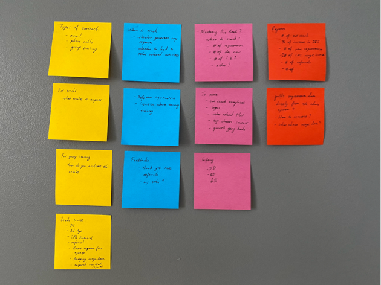
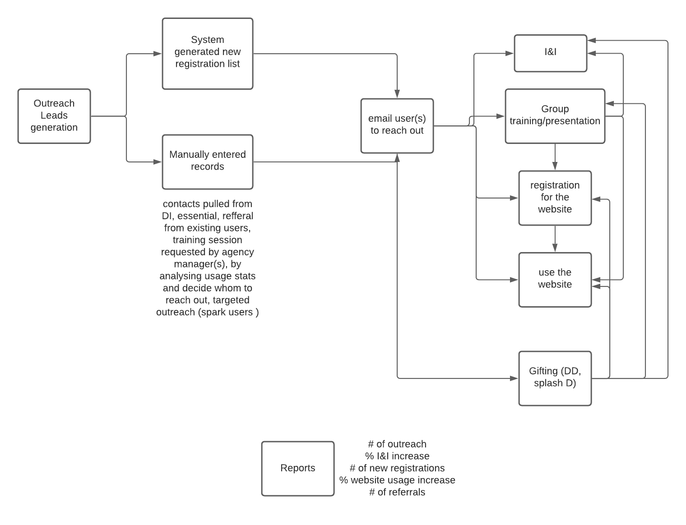
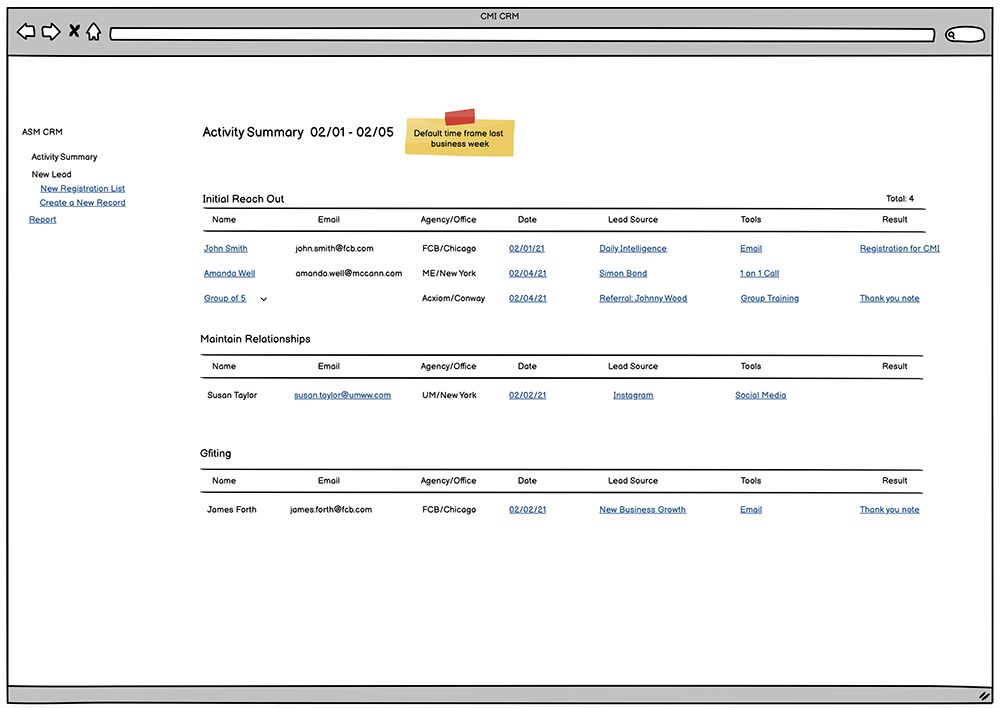

Outreach Management System Design(Ongoing)
 Duration: 3 Weeks (so far)
Duration: 3 Weeks (so far)
 Tools: Lucid Chart, Balsamiq
Tools: Lucid Chart, Balsamiq
 My Roles: Business Analyst, User Interface Design, Information Architecture, Prototyping
My Roles: Business Analyst, User Interface Design, Information Architecture, Prototyping
The account managers deal with clients on a daily basis and they need a system to manage their outreach activities. They came to me to design a system so that they don’t need to rely on the Excel spreadsheet and their brain when they need to know whether they have talked to the client before. I started out having conversations on what type of information they currently have and how they manage it.
At first, the conversation seems to be messy and I can’t seem to find the thread to pull. However, with more and more information collected, and by grouping the information I got into different categories, I start to have a clearer understanding of their needs.

Based on my understanding of the requirments, I put together a chart to illustrate how the information flows.

I then started to work on a list of the features that might help the user log and track their activities:
- I want to provide a system that completely eliminates the manual labor. Once the data is entered, all the work should be done by the system and the only thing they need to do is to generate a report.
- This system should have a summary of various outreach activities within a time frame at a glance. They can then drill down to the specific information they want more details.
- This system should talk to other systems (such as the registration list and project database) so that they don’t need to enter the same information multiple times in different systems.
Next, I sketched the design for a couple of main pages and worked on the hi-fi prototypes. After completing the protoypes, I shared them on InVision with the team.
